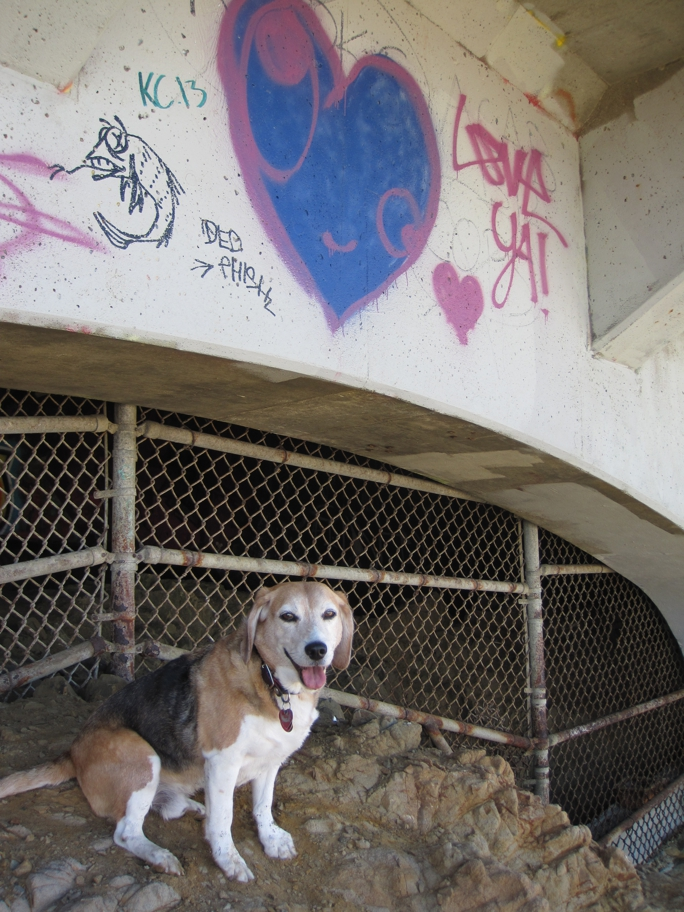

<--Previous Up Next-->

On top of the outcropping under Great Highway just south of the cliff house. It was small dog day at Ocean Beach; Huxley towered over them even when he got back down on the sand.
hearts Huxley Beagle sanfrancisco